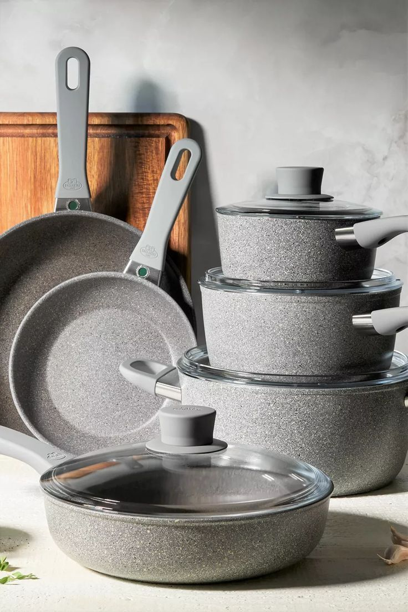

Cook With Love, Serve with pride
- Durable and long-lasting materials
- Non-stick coatings for easy cleaning
- Even heat distribution for perfect cooking
- Ergonomic handles for comfortable grip
- Variety of sizes for every need
- Affordable prices, great value
CLEAR WAX: Give a warm finish

Upgrade your cooking experience with our top-quality kitchen pots! Made from durable materials, our pots feature non-stick coatings for easy cleaning and even heat distribution for perfect results every time.
With ergonomic handles and a range of sizes, you'll love cooking and serving with our pots. Whether you're a busy parent, a professional chef, or a cooking enthusiast, our pots are designed to meet your needs.
The non-stick surface allows for healthy cooking with less oil, and the durable construction ensures they withstand daily use. From hearty stews to delicate sauces, our pots deliver.
A Limited-Time Offer

Don't miss out on the opportunity to elevate your cooking experience with our exceptional kitchen pots. With their unbeatable quality, practical design, and affordable price, they're a must-have for any kitchen.
A BONUS GIFT
Free shipping on orders over R500
"Join thousands of happy customers"